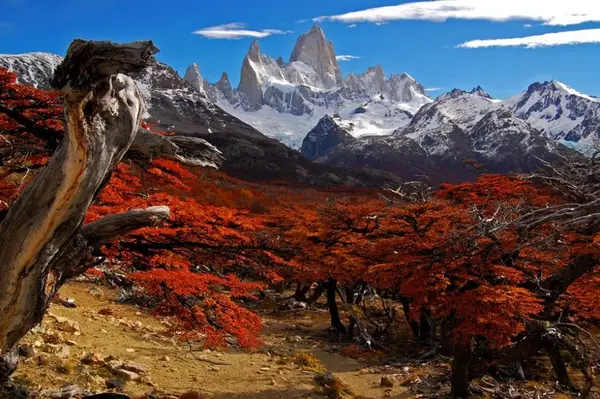
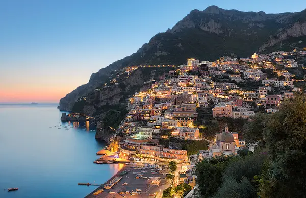
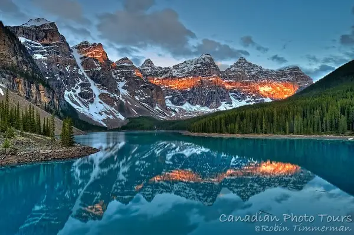
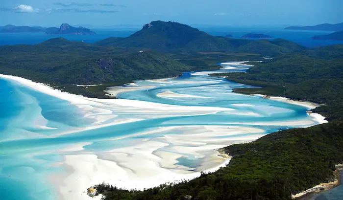

South Africa
This country sweeps international travel prizes and has travellers raving about its beauty so much that it has the highest repeat tourism of any long haul destination in the world! Considering how crazy people are about the place, it's not surprising that South Africa takes the top spot in the beauty stakes. Not only does the country have stupendous natural beauty, but it's urban-amazing too. The town of Franschhoek has been named amongst the five loveliest in the world, and the metropolis of Cape Town is more often than not picked as the most beautiful city on earth by travel lists and tourists alike, because of both its unparalleled natural setting and gorgeous architecture.

UNITED STATES OF AMERICA
OK, we're biased, but the good old US of A is one of the most stunning places in the world, and pretty much no one could argue that point. From the jaw dropping Yosemite to the awesomeness of New York City, few countries can compete with what's on offer in America. Half of the most beautiful canyons in the world are here, including Zion, Antelope, Bryce, Paria, Waimea and of course the Grandest of them all. The Painted Desert is one of the most beautiful in the world, and Tracy's Arm is amongst the most beautiful fjord's in the world. The Everglades are amongst the most beautiful wetlands, Yellowstone is by far the world's greatest geothermal site and it's not too bad for wildlife either.

New Zealand
The "World's Most Beautiful Island-Nation" is so stunning that it even makes the Top 3 for Beautiful Countries. It's hard to know where to begin with such a scenically magnificent place. Wellington has been named one of the ten most beautiful small cities, and Auckland is famously attractive with a host of beaches dotted around its fascinating isthmus setting. Queentown is the obvious 'urban' scenic highlight of the country, because it is so stunningly situated on Lake Wakatipu in the shade of 'The Remarkables' mountain range. It's no wonder it has been named one of the five most beautiful towns in the world.
China
The world's third largest country has some of its finest scenery. The Mekong River is one of the most extraordinary rivers in the world, arising in the vast Tibetan Plateau. This plateau is the largest and highest plateau in the world, with tens of thousands of glaciers including the Rongbuk, Midui and Hailuogou that eventually help feed the Mekong and many other rivers. If regarded as a canyon, the Yarlung Tsangpo Canyon is certainly the largest on Earth, stretching over 300 miles in length and attaining a mind boggling maximum depth of almost 20,000 feet near Mount Namcha Barwa in the Himalayas. And of course the Himalayas are probably the ultimate visual highlight of the great country of China.

Namibia
The desert nation of Africa is hauntingly beautiful. It's Germanic influence is evident throughout the country, which is one of the world's natural treasure troves. Etosha national park is indisputably one of the world's greatest game reserves. Before the rainy season, it offers wildlife viewing that rivals the very best reserves on Earth. The Caprivi Strip is a water wonderland, with the Epupa falls generally regarded as the second largest waterfall in an arid area. The Erongo mountains, Spitkoppe and Brandberg are amongst the most remarkable mountains in the world, and the Namib Naukluft feature on the list of mountains that one must see, but that are often unknown.

Argentina
She may have wanted the country to hold back its tears, but it's pretty certain Evita shed a few when considering its incredible beauty. From the urban splendor of Buenos Aires, rated one of the most beautiful cities in the world, to the massive expanse of the Pampas, Argentina is a land of evocative beauty. The Iguazu Falls, which straddle, Argentina and Brazil, are generally regarded as one of the two most impressive and beautiful waterfalls in the world - with only Victoria Falls in Zambia / Zimbabwe being rated above it with frequency. Probably the scenic highlight of the country, though, is Patagonia. It is a world of stunning glaciers and impossible towering spears that tear the sky.
Colombia
This may be an unexpected addition to the top 10, but Colombia deserves its spot! It is one of the most biodiverse countries in the world, due in part to its incredible altitude differences within the tropics. The country has some of the most impressive sections of the Andes, and Santa Marta is the highest coastal mountain range on Earth. Within only thirty miles of the Carribean Coast, the range rises over 18,000 feet! Caño Cristales is often called the most beautiful river in the world, due mostly to being multi-colored, and spots such as Cabo de la Vela Tarona National Park and Salento and the Coffe Triangle ensure this country's undisputed place on a world's most beautiful list.

Tanzania
Land of the Serengeti, Lake Victoria, Lake Natron and Lake Manyara, the Ngorongoro Crater, Zanzibar, the Spice Islands, Dar Es Salaam and a million more, Tanzania is almost beyond belief. Mount Kilimanjaro rises over 3 miles above the surrounding plains, making it one of the world's two mountains with greatest vertical relief, together with our own McKinley. It is also the largest free standing mountain in the world. Birthplace of Freddie Mercury, the country is one of the very best wildlife destinations on earth. During the great migrations between Kenya's Maasai Mara and Tanzania's Serengeti, which means 'Endless Plains', the largest migration of mammals in the world takes place.

Italy
Probably the most beautiful country in all of Europe, Italy is one of the world's great tourist destinations for a reason. Not only are the Dolomite Alps some of the loveliest mountains on earth, but the Mediterranean finds its very most beautiful landscape on the Amalfi Coast, named the third most beautiful coastal drive in the world. Rome is one of the most stunning cities on earth, and Positano has been named the loveliest town in all the world. Some more of the world's loveliest coast is found in the stunning island of Sicily.
Kenya
Land of the Maasai Mara and image of wild Africa. The country has been rated in the top 3 wildlife countries on Earth, and Mount Kenya is the second tallest mountain on the continent. The spectacle of the great migration is one of the greatest in the world, and the views of Kilimanjaro from Amboseli National Park are ironically probably better than from Tanzania itself, in which the great mountain is situated!

Canada
The Canadian Rockies are justifiably famous as amongst the most beautiful in the world. The stunning view of the Twelve Apostles from Moraine Lake in Banff National Park is one of the most beautiful in the world, Vancouver is one of the world's loveliest cities, the Baffin island mountains are known by few but are totally unmissable travel highlights, the country has the longest coastline in the world, and as featured in a recent list the mind bending Sam Ford Fjord is seen by some as the world's most impressive fjord on planet earth! And you thought they only had Bieber?

Switzerland
Europe's mountain nation encompasses probably the very most beautiful parts of the Alps. The Matterhorn is listed number two on the most incredible mountains in the world list, and the Bernese Oberland makes up some of the most beautiful highlands on earth. The country has earned it's cliché for near-perfection, as it is amongst the cleanest on earth. Wandering through the streets of some of the most beautiful towns and villages in the world, like Lugano and Luzern, one feels it would be possible to eat off the streets themselves!

Uganda
"The Pearl of Africa" is incredible. Though a small country, it is the starting point of one of the most amazing rivers in the world – and its very longest - the Nile. The river is born in the 'mountains of the moon', more accurately known as the Rwenzoris, which are some of the mountains you've probably never heard of but have to try see! Lake Victoria has been called the most amazing lake on earth, and the country is one of the best wildlife viewing destinations on earth thanks in large part to the stunning Murchison Falls National Park.

India
Home to stunning places like Rajasthan and Goa, India has everything from tropical beaches to the glacier capped Himalayas. From the town of Varanasi, to the great monument of love which is the Taj Mahal, to possibly the finest wildlife offered outside of Africa, the diversity, colors and frequent chaos of this nation can be overwhelming. Despite that, it undeniably has many of the most stunning places on planet Earth.

Chile
Chile spans almost from the equator to the sub Antarctic, making it the longest contiguous country in the world as measured by latitude. Crammed into the almost 40 latitude degrees are some of the world's most beautiful places. Last Hope Fjord is one of the most beautiful in the world, and the Atacama desert is astonishing, partly because it is the driest non-ice desert on Earth. Parque Nacional Torres del Paine is probably the most beautiful of all Chile's wonders, and is South America's answer to our own Yosemite.

Brazil
The world's most biodiverse country is also its fifth largest. Within such a massive area, it is unsurprising that there are scenic highlights. Foremost is undoubtedly the unparalleled Amazon Rainforest and Amazon River. The Rain Forest is by far the largest on earth, and would be the sixth largest country in the world were it independent. The Pantanal is one of the best wildlife destinations in the world, the Iguazu falls named the second most amazing waterfall in the world, and Rio de Janeiro has been named the second most beautiful city in the world.

Norway
Land of trolls and fjords, Norway is one of the most beautiful countries in Europe. While fjords such as Geiranger, Nærøyfjord and Sognefjord dominate the mental images of this Scandinavian gem, the Lofoten Islands are debatably its visual highlight. If you're surprised by the Northern Lights while taking in these stunning sights, your mind may just start playing some Edvard Hagerup Grieg in spontaneous celebration!

Philippines
Often overlooked because of neighbouring beauty Thailand, the Philippines is one of the most stunning countries in the world. It's made up of over 7000 stunning islands in the Pacific Ocean! Palawan in particular has been called the most beautiful island in the world!

Australia
Australia has 16,000 miles of coastline, boasting some of the most beautiful beaches in the world. The Great Barrier Reef is one of the greatest natural wonders in the world, the Island of Tasmania is one of the world's 10 most beautiful, and Sydney is one of the world's ten loveliest cities. The Hamersley Mountain range is the second oldest in the world. The Land Down Under is over the top beautiful!

Nepal
The mountain country of Nepal is predictably stunning. The capital of Kathmandu is possibly the most famous, and has exceptionally distinctive architecture, but the second largest town of Pokhara is the real jaw-dropper as it is looked upon by some of the tallest mountains on earth, in the Annapurna massif. At the time of this list's publication, Nepal has been rocked by a devastating earthquake that has claimed the lives of many. Our thoughts are with the people of the beautiful mountain nation.